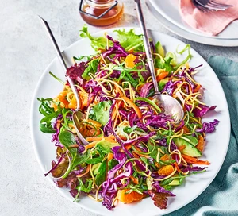

Make our noodle salad for a light lunch or side - toasted dried noodles are combined with fresh veg and citrus to make this satisfying recipe.
20 mins
2 mins
Easy to make
Serves 2

Ingredients
1 nest of dried egg noodles (about 60g)
2 tbsp sunflower oil
1 tsp sesame oil
1 tbsp apple cider vinegar
½ tbsp reduced-salt soy sauce
1 tsp maple syrup
1 mandarin, segmented
2 carrots, grated
2 spring onions, finely sliced
1 avocado, peeled, halved, destoned and diced
100g mixed salad leaves
¼ small red cabbage, finely sliced
Instructions:
Break up the noodles into small pieces and tip into a dry frying pan over a medium heat. Toast for 1-2 mins until slightly golden. Remove from the heat and set aside.
Combine both oils, the vinegar, soy sauce and maple syrup in a large bowl and season. Toss in the rest of the salad ingredients, along with the toasted noodles. Serve immediately.